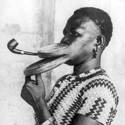

|
| Home | Talent | Cosmetic | Deformity | Abnormal | Ethnological |
Madam Gustika

Madam Gustik is an exmaple of an African Woman of tribal descent being exploited for her culture. This image of her smoking a pipe has become one of the most important pieces of cultural appropriation and ethnologicism in the Freak Show Era. Much like other freaks, she was seen as an other and put on display for the liking of the United States in the 1930s.
|